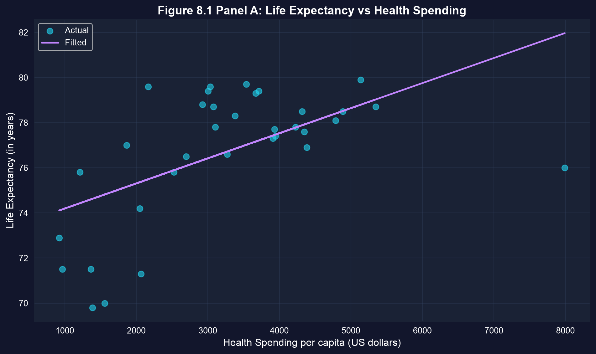
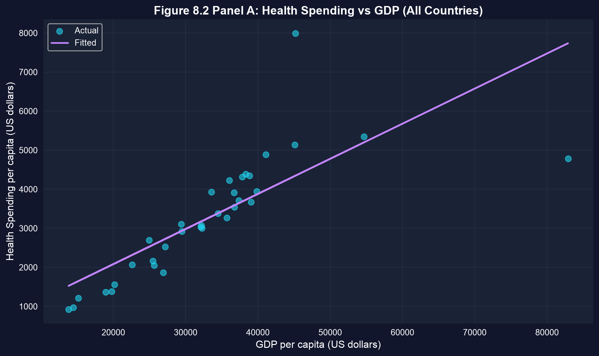
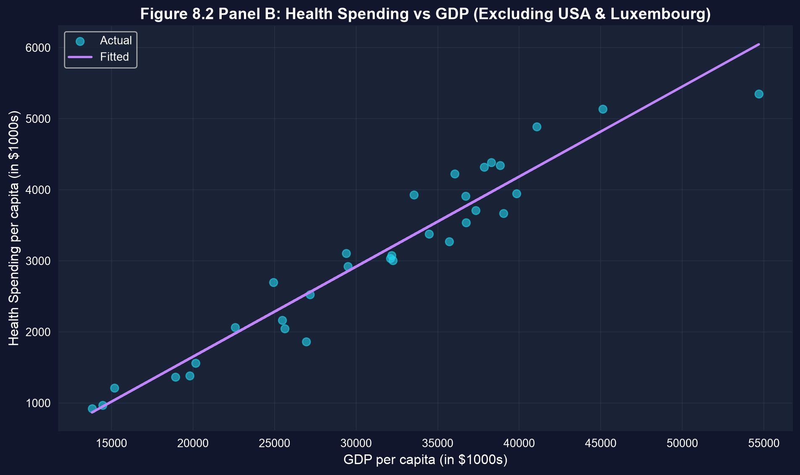
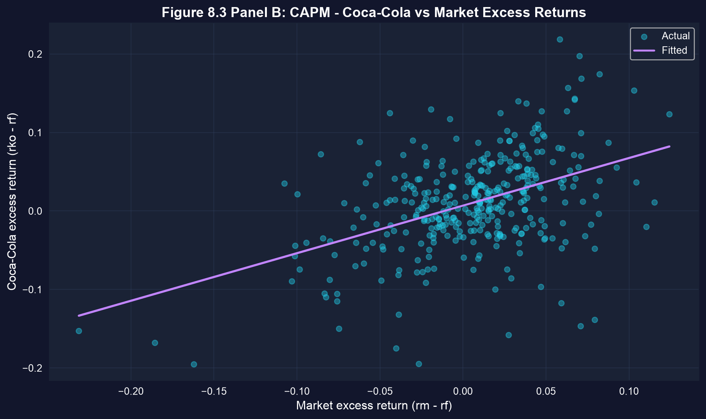
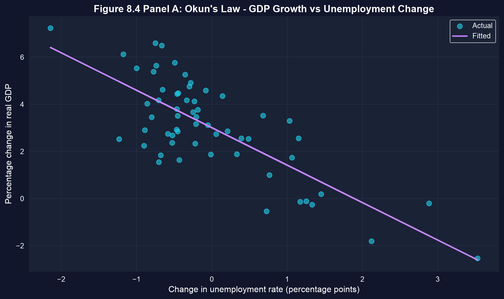

Act I · The tension
Health economists, portfolio managers, and macroeconomists seem to work in separate universes.
Yet each reaches for the same instrument: a bivariate regression of \(y\) on \(x\). The craft is not running it — it is reading the slope honestly once the data fight back.
Across all four cases, the estimator is pf.feols — what changes is how we read it.
Act II · The investigation
34 OECD countries, 2009. Regress male life expectancy on per-capita health spending:
\[\text{lifeexp} = \beta_1 + \beta_2 \cdot \text{hlthpc} + u\]
One snapshot, 34 units — a cross-sectional regression. We expect \(\beta_2 > 0\): more spending, longer lives.
!pip install -q pyfixest # pyfixest isn't preinstalled in Colab (-q = quiet)
import pandas as pd # load & handle tabular data
import pyfixest as pf # OLS with built-in robust SEs
url = "https://raw.githubusercontent.com/quarcs-lab/data-open/master/AED/AED_HEALTH2009.DTA"
data = pd.read_stata(url) # 34 OECD countries, 2009 (one row per country)
fit = pf.feols("lifeexp ~ hlthpc", data=data) # OLS with classical (iid) SEs
fitr = pf.feols("lifeexp ~ hlthpc", data=data, vcov="HC1") # same slope, heteroskedasticity-robust SEs
fitr.summary() # β1, β2, robust SE, t, p, R²
Each dot is a country. The fitted line slopes up; the U.S. spends the most yet lives below prediction.
\(+\$1{,}000\) spending \(\approx +1.1\) years (\(\hat\beta_2 = 0.00111\)). Robust \(t \approx 2.4\) — still significant, but weaker than the classical \(t \approx 3.9\).
Same data, outcome = infant mortality. The slope is negative (\(-0.69\) deaths per $1,000), as hoped — but the verdict depends on which standard error you trust:
| Standard error | \(t\)-statistic | \(p\)-value | Verdict at 5% |
|---|---|---|---|
| Classical (iid) | \(-2.3\) | \(\approx 0.03\) | significant |
| Robust (HC1) | \(-1.3\) | \(\approx 0.19\) | not significant |
Cross-sections are usually heteroskedastic. Report robust SEs by default — classical ones can manufacture significance.
!pip install -q pyfixest # pyfixest isn't preinstalled in Colab
import pandas as pd # tabular data
import pyfixest as pf # OLS estimation
url = "https://raw.githubusercontent.com/quarcs-lab/data-open/master/AED/AED_HEALTH2009.DTA"
data = pd.read_stata(url) # 34 OECD countries
full = pf.feols("hlthpc ~ gdppc", data=data) # health spending on GDP — all 34 countries
sub_df = data[(data["code"] != "USA") & (data["code"] != "LUX")] # drop two influential outliers
sub = pf.feols("hlthpc ~ gdppc", data=sub_df) # refit on the remaining 32 countries
print(full._r2, sub._r2) # R² leaps 0.60 → 0.93 once outliers are removed

\(R^2\) jumps from \(\approx 0.60\) to \(\approx 0.93\). Always find your influential points before trusting a slope.
The Capital Asset Pricing Model regresses a stock’s excess return on the market’s excess return:
\[R_A - R_F = \alpha + \beta\,(R_M - R_F) + u\]
\(\beta\) is systematic risk: \(\beta>1\) amplifies the market, \(\beta<1\) is defensive. Pure theory says the intercept \(\alpha = 0\). 354 monthly returns on Coca-Cola, 1983–2012.
!pip install -q pyfixest # pyfixest isn't preinstalled in Colab
import pandas as pd # tabular data
import pyfixest as pf # OLS estimation
url = "https://raw.githubusercontent.com/quarcs-lab/data-open/master/AED/AED_CAPM.DTA"
capm = pd.read_stata(url) # 354 monthly excess returns, 1983–2012
fit = pf.feols("rko_rf ~ rm_rf", data=capm) # Coca-Cola excess return on market excess return
fit.summary() # α (intercept), β (slope = systematic risk), R²
Monthly excess returns with the fitted CAPM line. The slope is well under 45°.
\(\hat\beta = 0.61\) (less volatile than the market), \(R^2 \approx 0.20\). A significant \(\hat\alpha \approx 0.68\%\)/month is the “alpha puzzle.”
Annual U.S. data, 1961–2019. Regress real GDP growth on the change in the unemployment rate:
\[\text{growth} = \beta_1 + \beta_2 \cdot \text{URATEchange} + u\]
One country over 59 years — a time-series regression. Okun’s 1962 benchmark is \(\beta_2 = -2.0\).
!pip install -q pyfixest # pyfixest isn't preinstalled in Colab
import pandas as pd # tabular data
import pyfixest as pf # OLS estimation
url = "https://raw.githubusercontent.com/quarcs-lab/data-open/master/AED/AED_GDPUNEMPLOY.DTA"
gdp = pd.read_stata(url) # 59 years of U.S. data, 1961–2019
fit = pf.feols("rgdpgrowth ~ uratechange", data=gdp) # GDP growth on the change in unemployment
fit.summary() # slope ≈ −1.59 vs Okun's −2.0; R² ≈ 0.59
Each dot is one year; recession years sit far up-left. The line slopes down at −1.59.
\(\hat\beta_2 = -1.59\), \(R^2 = 0.59\). We reject \(\beta_2 = -2.0\) (\(t \approx 2.4\)), yet it’s “close enough” for policy.
Act III · The resolution
Response. The U.S. spends the most on health yet lives below the line — proof that how you spend, and everything the regression omits, can dominate the slope itself.
pf.feols, fits cross-sectional, financial, and macro data alike.vcov="HC1" for heteroskedasticity-robust inference — make it a habit.